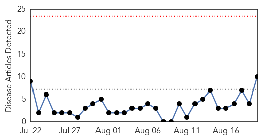
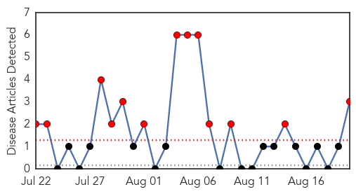

Cholera
30-Day Web Trend
0 alerts, 0 warnings

30-Day Twitter Trend
4 alerts, 0 warnings

Article Locations

Article Confidences

Top Articles:
- 0.995
- WHO providing emergency life-saving health services to internally displaced persons in South Sudan
- 0.993
- WHO provides emergency health services to internally displaced persons in South Sudan
- 0.987
- Cameroon to receive cholera vaccines from Gavi
- 0.863
- South Sudan: Cholera Response Sitrep, 3 - 19 August 2015 - South Sudan
- 0.856
- U.S. presidential candidate puts U.N. on the spot for cholera in Haiti
- 0.849
- Social : Humanitarian emergency, $25M necessary
- 0.743
- Hôpital Albert Schweitzer Haiti receives grant to battle HIV
- 0.708
- Politico SL News How housing difficulties influence healthcare in Sierra Leone
- 0.671
- Yemen crisis: How bad is the humanitarian situation?
- 0.581
- Saudi- New head for health panel
Top Tweets:
-
No tweets found for Aug 20, 2015
Mumps
30-Day Web Trend
13 alerts, 0 warnings

30-Day Twitter Trend
0 alerts, 0 warnings

Article Locations
Article Confidences

Top Articles:
Top Tweets:
- 0.524
- RT: Mumps can cause serious complications like brain swelling & deafness. Protect your child with mumps vaccine. http://t.co/LddU…